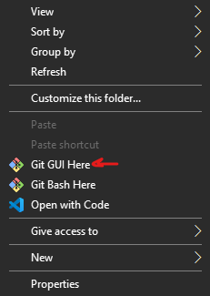
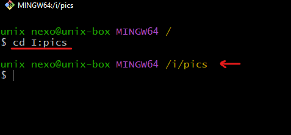
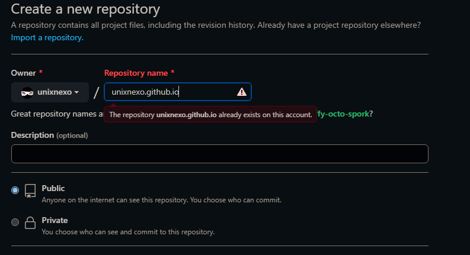
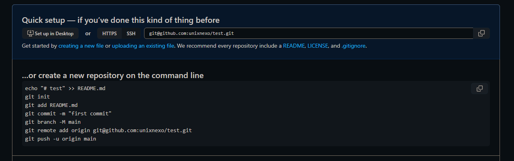

| How to upload your content to GitHub via Git (Command line via SSH)
What is Git
At the heart of GitHub is an open source version control system (VCS) called Git. Git is responsible for everything GitHub-related that happens locally on your computer.
How to configure Git
- First download and install the latest version of Git: https://git-scm.com/downloads
- After installing, open Git Bash on the repository to wish to transfer to Github (on windows you can right-click in the repository and open Git Bash or you can use “cd” to change directory).
- So firstly you need to setup your username and email address.
- git config --global user.name "Your name here" and to make sure that you set it up correctly: git config --global user.name
- git config --global user.email "your_email@example.com"
- Set up SSH on your computer. ssh-keygen -t rsa -C "your_email@example.com" remember the place which you save the key.
- Copy the generated SSH key (You might entered the location or it’s on the default location which is where your new user has been created - mine is on C:\Users\unix nexo\.ssh).
- Head up to your Github account and go to the Account settings>SSH and GPG Keys>New SSH Key. Paste the SSH key and move on.
- To test whether the connection is established or not use this command ssh -T git@github.com if you got a message like the following it means that the connection is good: - Hi username! You've successfully authenticated, but Github does not provide shell access.


- Go to your Github page and create a new Repository by clicking on the New green-button.
- Enter the name of your repository. Consider that if you want to host your content like a website on the Github pages you need to name the repository exactly the same name as your Github username and followed by .github.io.
- o my username is unixnexo and if I want to host my website I would do this:
- Then click on Create repository.
- Now follow the rest as Github said.
- Open up the Git Bash on the repository you want to push.
- First connect to the SSH: git@github.com:unixnexo/test.git
- git init → Every time you want to push a repository you first need to init Git on the repository and you’ll see a hidden folder called .git on your repository.
- git branch -M main
- git remote add origin git@github.com:unixnexo/test.git
- git commit -m "first commit"→ Every time you want to push something you first need commit it and add a comment.
- git push -u origin main→ and lastly you push the content.
How to push repository to GitHub (using SSH)


- Just open the Git Bash on your local repository and type git status → this will give you the status of your files.
- To add the all new content to your Github repository just type git add . → the “.” here means select all un-pushed items.
- Then you need commit the changes and enter a comment by typing git commit -m "something"
- Lastly you need to push the following changes by typing git push or git push -u origin main
How to push the new content
So for example as you are developing your website you are going to make lots of changes and add new content, so you need to update the Github repository as well.